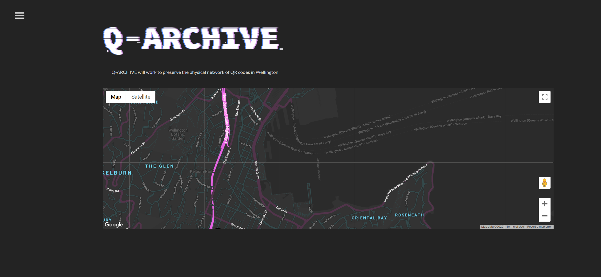

Project 2 progress journal
Project 2 progress journal
09/09/2020
Inital recourse hunting
To create my project I will need to learn how to embed a map into a website and have it be intractable, and also a submission page for people to
upload images/sightings of QR codes around Wellington.
I started to research how to get the map working because I think it might be the harder part of making a working prototype.
I found out that Google has a 'My Maps' feature where you can make and customise your own map and embed it in a website.
I also found https://snazzymaps.com/, which is a creative commons data base of different map styles that can be used on My Maps.
This will likely be helpful in making my map coherent with my brand.
There are other sites I could look at using
like https://www.mapbox.com/ but these look to be aimed more towards businesses and people who have a better understanding of code than me.
I also researched how to make a form submission page in code. I found a couple of articles with helpful information on this.
https://developer.mozilla.org/en-US/docs/Learn/Forms/Your_first_form#Active_learning_Implementing_our_form_HTML
https://dev.to/charalambosioannou/create-a-static-webpage-with-a-contact-form-on-github-pages-3532
10/09/2020
Brainstorming
I was looking at several different ways to bring the Q-ARCHIVE to life.
My first idea was a website. This would be practical because when most people are browsing the internet or looking at things like archives they are on a desktop device.
It is also easy to make it interactive with a embedded map and submission form.
This is the idea I am leaning towards most.
The only flaw I can think of is that most people scan QR codes with their phone, so a desktop is not necessarily ideal for that.
However, users can have the QR code on their desktop and scan it on their phone if they want, so it is not too big of a flaw. Alternatively
the QR code will be accompanied with a hyper linked URL on the website archive so they can just click that on their desktop device.
My second idea was a physical printed out map, say maybe a1 or a0 size and stuck on a wall in a public (but indoor) space. This would make it an interactive exhibition, therefore limiting its audience to curious people who go into exhibit spaces, or those who have heard of it. It would be on the wall, and people would be able to pick up physical location pins (individually numbered) then place them on the map where they saw a QR code. There will be an accompanying table with the pin numbers, and a space next to it for the person to write the url that the QR code led them to.
A flaw of this is that it would
limit the number of entries, as there is a physical space limit on the physical map, and it would be less permanent than a digital archive.
Below is a very rough sketch of what some of the components of a physical exhibition of Q-ARCHIVE might look like.
My last idea for this project is a mobile app that has the map functionality. The only way this would really be different to the website is layout,
and maybe a few added features like saving favourite codes. This seems unnecessary though and will lose the desktop audience. The main pro to
this idea is that people use their phones to scan QR codes so it would be convenient, and the websites that the codes lead to are likely
optimised for phones.
I think I will work on a website prototype, as it seems like the most effective way to create Q-ARCHIVE.
16/09/2020
Wireframing
I did some physical sketches of what I want my Q-ARCHIVE website to look like (aimed towards desktop users), iterating a few different ideas.
I thenused wireframe.cc to make a digital wireframe to follow.
The main (map page) will hopefully look like this.
This wireframe can be found at at https://wireframe.cc/fzFUI1
The hard part I think will be getting the information to display separate from the map, but to respond to the map (when you click on the map
it brings up the information about that QR code in a separate section). If this does not work, the map page will simply be a map
(and the info pops up as you click on it, as supported by Google Maps).
16/09/2020
Getting base code working
I started to get the actual basic code of my website done, starting with HTML and CSS.
For the page with the map, I figured it would be too hard to have the separate section with information about
each QR code, so I just worked on embedding my google map into a page, and getting a working hamburger menu. This is the very basic wireframe I was
following (I made ANOTHER simpiler one with less small details to make it less confusing for myself).
I managed to get all the content onto the page with no trouble. Next I need to work on styling the page to fit the aesthetic of my project,
and laying it out like the wire frames in the previous post.
I also used a modified version of this hamburger menu on my website.
I made it fit the height of the page and contain the links that I need.

17/09/2020
Trying to get a stylised map
Today I spent a long time trying to get a google map embedded into my site that I could add the custom colours to. This meant not using the map
that I had made on google, but by writing code in JavaScript.
I followed these tutorials to no avail:
https://www.youtube.com/watch?v=9CY0V0JAgNU&ab_channel=DaniKrossing
and https://www.youtube.com/watch?v=1JNwpp5L4vM&ab_channel=WebbyFan.com
At this stage I can't figure out what is wrong, as I have followed the tutorials word for word and the map is still not appearing on my site
even without the code for the styling styling. The styling is important as it will make the map match with my brands aesthetics.
I may have to look into other methods of implementing a stylised map if I can't get this working soon. Below is the code I currently have written
for the map.
17/09/2020
The map is working!
Turns out all that I needed to do was put a billing account on my API thing to get it to work, a
nd give the container it was in a height (as it was 0 so the map wasn't showing up). The styled map looks really good with my brand
logo. I think to make the design as cohesive as possible I want to try and put a gradient in the background rather than a flat grey.
The map style is one I created in Snazzy Maps (https://snazzymaps.com/style/330974/q-archive) and looks like this:
and looks like this on my site:

I might play around with the sizing but I currently like the long and narrow look it has going at the moment,
it sort of reminds me of a wide screen movie like you see in the cinema.
My next step is to add markers and info boxes when the markers are clicked on. I fear this may be harder than I anticipated,
as I can't simply use My Maps, I have to code all of this myself. But it will be good for me to learn these skills.
17/09/2020
Custom markers
Putting in custom markers this way requires me to manually put the coordinates for each location into an array.
https://developers.google.com/maps/documentation/javascript/custom-markers
This is the tutorial I followed to get it to work.
I also designed a custom pin marker with a QR code on it to help with my branding.

18/09/2020
Info windows
To make the map effective, I needed to make the markers display information about what QR code was sighted there when clicked on.
This is known as an info window. It took me awhile to figure out how to get this working, as initially it was only working on the
last location in my array of co-ordinates, and would only display one piece of information for all of the different markers.
Eventually I ended up combining this code here
https://stackoverflow.com/questions/3059044/google-maps-js-api-v3-simple-multiple-marker-example with my own to achieve what I wanted.
The next step is to format it so that it matches the rest of my page and include an image. This is currently what it looks like (wrong info!)

19/09/2020
Customising the info windows
Google said themselves that these windows have limited customisation, but I couldn't find any alternative way to do this within my skill level.
My main problem was the background, as I couldn't get it to change colours the way I wanted it to. It ended up looking like this:
So I decided to just roll with the white background, as it sort of nicely contrasted with the black map anyway.
The main things I had to do to the info window were add the image, and change the content. Some of the things I did to improve it were:
Below is the code for the marker and the infobox css, as well as the final look on my website.
22/09/2020
When starting out with this project, I thought it would be as simple as embedding a map that I had customised online on Google Maps.
It ended up being so much more complicated than that and I had to learn and understand a lot of JavaScript that I wasn't expecting.
Luckily I have been teaching myself a bit of code for this class, and I learnt a bit of java beforehand in creative coding 1 and 2,
so with that knowledge and a lot of help from Google I was able to get the map working. Without this proir knowledge I don't think I
would have been able to achieve as much as I did.
The most difficult bit of coding the map was the info windows. I had a lot of trouble understand how the code for them was working in the
official google documentation, and ended up having to use a different way that I found on a help forum online. I also think that they
could be styled to suit my projects aesthetics better, but working with what I had I think that I did a pretty good job.
I think the part that worked the best of the map is the styling. The custom colours on the map really helps match the map to my
brand. The default google map styles are quite frankly a bit ugly and there were none remotely close to what I wanted. Also being
able to turn off street and satellite view through the code was good, as now users have to view the map the way I intend it to be seen.
The submission form was simple html and css, which was a lot easier than I was expecting. If I was making it fully functional (i.e.
making it send the submitted data somewhere) it would probably end up being a lot more difficult, but for this prototype it works
as much as it need it too. The hardest part was probably as simple as getting it all aligned properly.
Overall, the page has the right digital, modern look I was hoping to achieve. I'm really proud of all of the coding that I did
to make this work so seamlessly, and I believe that this could work as an actual full scale project that real people could interact
with and contribute too with a little more tweaking.
The final prototype can be found at https://straycatss.github.io/Project2prototype/